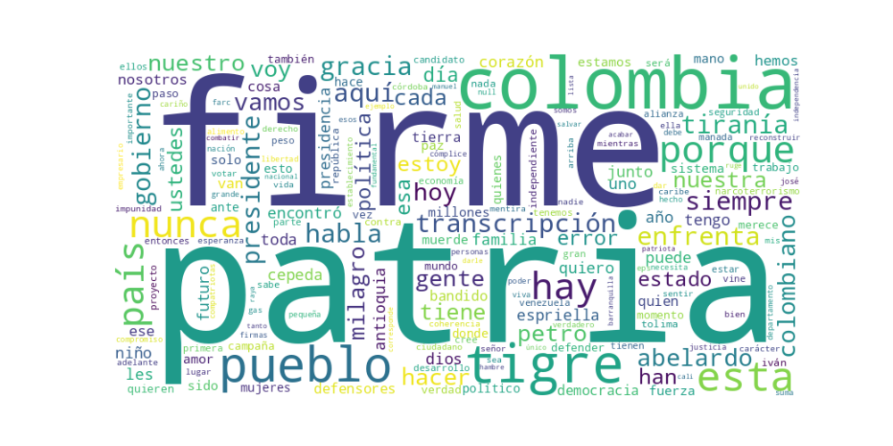

Seguidores: 971,066
Reporte de Análisis de Comunicación - Candidato Presidencial Abelardo de La Espriella
1. Perfil de Comunicación: El candidato emplea un estilo de comunicación directo, emotivo y altamente confrontacional. Su lenguaje es informal y popular, con uso frecuente de términos coloquiales ("ardentía", "cojones", "vaina"), destinado a generar identificación con un público masivo. Se presenta como cercano y empático ("como tú y como yo"), aunque simultáneamente adopta un tono de líder fuerte y decisivo. Utiliza un registro que oscila entre el relato personal (encuentros con ciudadanos) y la declaración épica, construyendo una narrativa de batalla. La comunicación es visual y simbólica, reforzada por el uso constante de emojis (🐅, 🇨🇴) y la frase de cierre ritual "Firme por la Patria".
2. Temas Principales: * Seguridad y Orden: Aborda el tema con lenguaje militar y de "mano firme". Propone "cadena perpetua para asesinos de niños", combatir el narcoterrorismo "sin tregua" y recuperar el control territorial. Ejemplo: "Iván Mordisco será parte del pasado... la paz no se negocia con terroristas: se impone con decisión". * Salud: Lo enfoca como una "crisis humanitaria" y promete un "plan de choque de 90 días". Utiliza casos concretos (campesina sin medicamentos) para humanizar el problema y criticar la gestión actual. Ejemplo: "restableceré el sistema de salud para que deje de ser un privilegio". * Corrupción y "Los de Siempre": Este es el eje central de su discurso. Define una lucha entre "los nunca" (él y sus seguidores) y "los de siempre" (la rosca política, el establecimiento). Ejemplo: "Esta es la batalla de los nunca contra los de siempre... los que nunca hemos vivido de la teta del Estado". * Economía y Empleo: Propone bajar impuestos a empresarios para "nivelar" y proteger el empleo, activar renglones económicos e industrializar el campo. Enfatiza su origen empresarial como credencial. Ejemplo: "Para ayudar a los pobres, tengo que darle garantías a los empresarios". * Identidad y Patriotismo: Construye una narrativa nacionalista y regionalista ("patriota del Caribe"). Se presenta como defensor de valores tradicionales (familia, Dios, cultura) y de la "colombianidad". Ejemplo: "Soy hijo del Caribe, y soy el que va a reivindicar al Caribe colombiano".
3. Tono y Sentimiento Dominante: El tono dominante es combativo y crítico. Se autoproclama como un "outsider" que enfrenta un sistema corrupto y establecido ("los de siempre", "la vieja política"). Es un discurso de confrontación directa contra el gobierno actual (Petro), su candidato (Cepeda), la JEP y los medios ("Coronel es un falso periodista"). Aunque hay momentos propositivos (presentación de propuestas), el sentimiento predominante es de denuncia y lucha. También hay un componente esperanzador ("Patria Milagro") y religioso ("protegido por Dios"), pero siempre enmarcado en una batalla épica.
4. Palabras Clave de Poder: * "Los nunca" / "Los de siempre": Dicotomía fundamental que estructura toda su narrativa política. * "Patria Milagro": Objetivo utópico y esperanzador de su proyecto. * "Firme por la Patria": Fórmula ritual de cierre que une nacionalismo y determinación. * "Tigre": Símbolo personal de fuerza, rugido y acción ("muerde", "ruge"). Apela al instinto y la potencia. * "Outsider" / "Independiente": Credencial clave para diferenciarse del sistema. * "Extrema coherencia": Valor que presenta como antídoto contra la politiquería. * "Manada": Comunidad de seguidores, evocando fuerza colectiva y pertenencia.
5. Conclusión Estratégica: La estrategia de comunicación del candidato Abelardo de La Espriella es la construcción de un personaje épico y antagonista. Se posiciona como el único líder "verdadero" (outsider, independiente, no corrupto) frente a un establishment corrupto y un gobierno aliado con el narcoterrorismo. Su audiencia principal parece ser el ciudadano común ("los nunca") que se siente decepcionado por la política tradicional, con fuerte apelación al sentimiento regional (Caribe) y a valores conservadores (familia, Dios, orden). Busca evocar un fervor populista, mezclando resentimiento contra las élites ("rosca") con una promesa de redención nacional ("Patria Milagro"). Su comunicación es una herramienta de polarización diseñada para galvanizar a un sector descontento mediante un lenguaje de guerra política, símbolos fuertes (el tigre) y una narrativa maniquea de salvación.
Corpus: Textos de los 10 videos de Instagram más exitosos del candidato.
El patrón dominante es la conjugación de confrontación épica con un llamado a la restauración nacional. El candidato construye un relato binario y visceral donde se posiciona como el único líder capaz de librar una batalla existencial contra un enemigo poderoso y corrupto (Petro, Cepeda, "los de siempre", el narcoterrorismo). El éxito no se basa en detalles programáticos, sino en un mensaje emocional de lucha, denuncia y esperanza mesiánica ("Patria Milagro"), dirigido a un electorado que siente rabia, desprotección y anhelo de un líder fuerte.
Se dirige a un electorado emocionalmente movilizado, con alto nivel de descontento y cierta desconfianza hacia las instituciones. No es una audiencia que busque tecnicismos, sino certidumbre y fuerza. Habla a quienes se sienten traicionados por la clase política tradicional ("los de siempre") y atemorizados o indignados por el gobierno de Petro. El lenguaje ("vaina", "comer cuento", "bandidos") y el tono confrontacional apelan a un sentido de urgencia y de verdad popular, conectando con sectores jóvenes y no tan jóvenes que consumen contenido político como una batalla cultural en redes sociales.
La clave fundamental es la transfiguración del discurso político en un relato épico y personalista. No vende un programa de gobierno; vende una misión de salvación nacional encarnada en su persona. Su poder radica en que sobrepersonaliza la política: él no es un candidato, es el "Tigre", el "independiente", el líder que asume todos los riesgos para redimir a la patria. Esto lo diferencia radicalmente del discurso político tradicional, que suele ser institucional, programático y más templado. Su comunicación es pura energía narrativa, donde cada video es un capítulo de una saga donde él es el héroe, los adversarios son villanos de una pieza, y los ciudadanos son invitados a ser parte de un ejército electoral. Es un populismo de confrontación digital, perfectamente calibrado para el algoritmo de la indignación y la lealtad tribal en redes sociales.

Caption: Insisto en mi llamado a la unidad; en segunda vuelta estaremos juntos enfrentando a Cepeda, el candidato de Petro, el enemigo en común. Mientras tanto, el país debe conocer que tiene tres opciones: votar por el independiente, por el Tigre; votar por los de siempre o votar por el candidato de Petro, Cepeda. Lo que no voy a aceptar son teorías retorcidas mientras Petro me intercepta, me perfila, me calumnia, quiere que me maten y pretende robarse las elecciones; yo enfrento sin temor las amenazas que hay sobre mi vida; lo mío no es el miedo, pero también lo digo claramente: tampoco le temo a decir la verdad ni a enfrentar a los contradictores con las armas de la argumentación y el debate de las ideas. Solo reconozco como enemigo a Petro, pero no dudaré en poner sobre la mesa las diferencias de fondo que hay con los contradictores: unidad para derrotar a los enemigos de la patria, claridad en las ideas y las diferencias políticas. ¡Firme por la verdad, firme por la patria! (A.D.L.E) 🇨🇴 🐅
Likes: 24,115 | Comentarios: 2,715 | Reproducciones: 185,045
Ver en InstagramCaption: Cuando recurren a interceptaciones ilegales, montajes judiciales, difamación y sicariato digital, es porque saben que se les acaba el tiempo. Le tienen miedo a un proyecto que no se arrodilla, que no negocia con la corrupción y que viene a poner orden de verdad. Miedo porque esta vez el pueblo está despierto, firme y decidido a cambiar el rumbo de Colombia. Aquí no hay discursos vacíos ni promesas recicladas. Hay carácter, hay decisión y hay una causa clara: derrotar a los de siempre, reconstruir la Nación y hacer que respondan quienes la han destruido. A Colombia le llegó la hora de la Patria Milagro. Firme por la Patria. 🫡🇨🇴🐅
Likes: 55,841 | Comentarios: 6,309 | Reproducciones: 432,325
Ver en InstagramCaption: ¡No coman cuento! A propósito de la importación de gas natural desde Venezuela, quiero decirles algo claro: producir nuestro propio gas genera empleo, impulsa el desarrollo y fortalece la economía de los colombianos. En mi gobierno produciremos el gas que necesita el país y defenderemos la soberanía energética nacional, como corresponde a una Colombia fuerte y con visión de futuro. Firme por la Patria. 🫡 (A.D.L.E) 🇨🇴🐅
Likes: 30,268 | Comentarios: 1,705 | Reproducciones: 241,440
Ver en Instagram